The making of
Gotta Go!
A browser game coded by an AI agent in {{clockHours}} hours, while its human mostly said “go on”.
- {{humanMessages}} messages from the human
- {{agentActions}} actions by the agent
- {{pullRequests}} pull requests
- 0 lines of game code by hand
Agent: Claude Code on Claude Opus 5.5. Human: the maintainer. Times in CET; the human's messages translated from Italian and shortened.
Scroll, swipe or press ↓
HumanBefore day one
A zip and a plan
The maintainer packs everything the agent will need into one archive.
AGENTS.md: the rules. English only, never touchmaster.GAME_DESIGN.md: Benny, the city, the toilets, the junk food.- A guard hook that blocks risky git commands.
- A 122-line kickoff prompt: nine milestones, M0 to M8.
HumanMessage 1 · Sun 14:41
“You are the developer of Gotta Go! I am the maintainer.”
“After each milestone, stop and wait for my go.”
RulesOne topic branch per change, a PR into
dev, merge on green CI. Only the human merges into master.
Agent14:43 · two minutes in
First move: stop
The agent checks the ground, and refuses to build on it.
- The repository holds one README. The kit is still zipped.
- No CI to merge on, no guardrails, no API keys.
- It lists what is missing, and waits.
HumanMessage 2 · 17:26
“I skipped the setup on purpose, and I'm not doing it. Everything is in the zip. What would you miss?”
AgentUnpacks the kit itself and opens #1.
Agent17:30 #1
The guard bites its own author
The guard hook goes live as soon as the agent copies it in, and blocks the agent from committing it.
- 8 guardrail files that only a human may commit.
- The agent writes the exact steps into the PR, and waits.
Human · 17:52“I pushed everything as the PR said. What now?” The human's hands-on work so far: one push.
Agent18:15 #3
M0An empty stage
PlayCanvas, TypeScript, Vite, and a peach capsule standing in for Benny.
- Unit tests, end-to-end tests, and a smoke test that fails on any console error.
- A lint rule keeps the engine out of the game rules.
- A seeded random generator:
?seed=42replays a run.
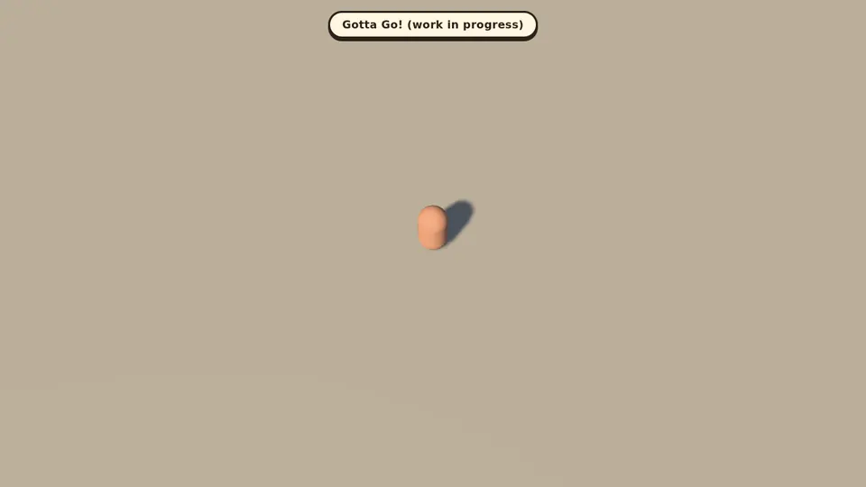
Agent18:19 · four minutes later #4
A roadmap
The kickoff becomes docs/ROADMAP.md: nine milestones, about thirty branches.
- M0 Scaffold
- M1 City
- M2 Benny moves
- M3 Clock, toilets
- M4 Food, score
- M5 Traffic
- M6 Art
- M7 Game feel
- M8 Hardening
Gameplay first, in greybox. Art last, so no money goes on things that may change.
Agent18:36 #5
M1A city from a seed
Every run, a new town. Same seed, same town.
- A ring road, avenues, boulevards, streets, alleys.
- A plaza with a fountain, a park, a clock tower, a river.
- Tested over many seeds: the fattest Benny can reach every avenue.
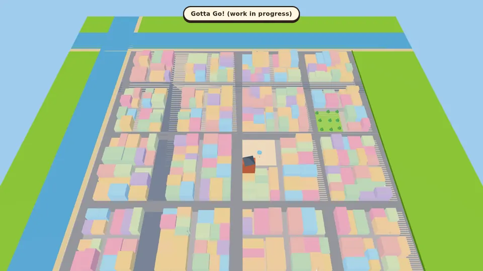
Agent19:01 #6
M1Will Benny fit?
One lookup tells: an exact clearance field on a 1 m grid.
- The whole city in 2 draw calls.
?debug=1maps the street classes, and where each Benny size fits.
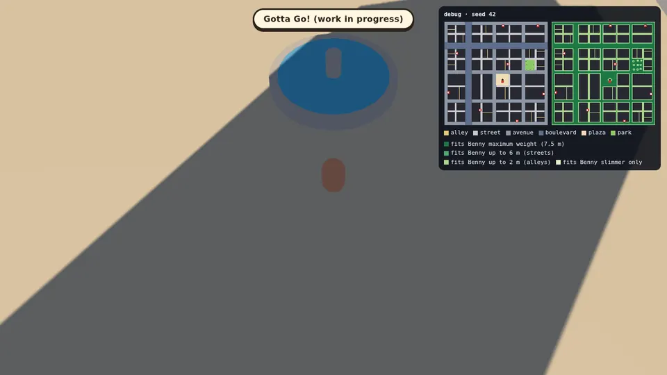
Agent19:29 → 21:59
Then it stops
2 h 30 min
M2 is done, and the kickoff said: stop after each milestone. So it reports, and waits.
HumanMessage 4 · 21:59
“Carry on. Go as far as you can, on your own!”
AgentSaves it to memory as a standing rule: chain the
milestones, stop only for money, secrets or master.
M3Free toilets, sometimes
- Kiosks cycle: free 6–14 s, busy 5–15 s, longer as the run goes on.
- Pop-up cabins: every 25 s when slim, every 6 s when massive.
- The mercy rule: no free toilet in reach? One pops up.
- Signs point to the 3 nearest by walking distance. Too wide to get there? Grey.
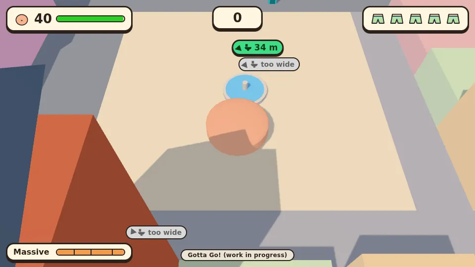
M4Junk food
- An item every 1.2 s, up to 25. Vegetables grow from 20% to 40%.
- Burgers add weight; vegetables cost seconds.
- Too fat for his alley? He is squeezed out to the nearest spot that fits.
- Combos up to ×3; the best five scores stay in the browser.
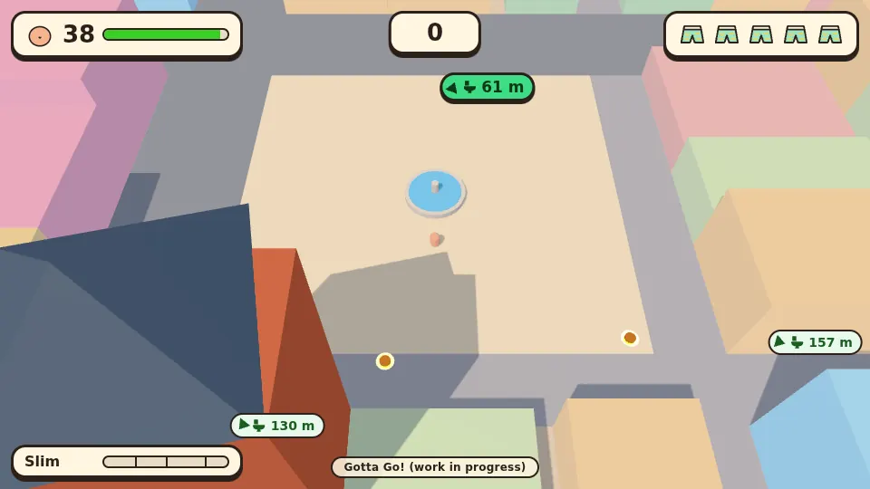
Agent00:22 #19
M6The one thing it won't do alone
Art costs money, and every paid call needs the human's yes.
- The free half ships: a model and image optimizer, a typed asset registry.
- Paid calls made: 0.
- It stops for the night.
HumanMessages 5–6 · Mon 06:41
“Meanwhile, what can I do to help? Do I give you API keys?”
AgentA how-to, and five image models compared with prices. Then the first account runs out of credit: 11 hours of silence.
HumanMessage 7 · Mon 17:52
“Carry on with what you were doing in the other session. Go as far as you can, on your own!”
AgentA new session, on another account. Nothing lost: the plan lives in the repo, the agent's memory and the open release PR.
M7A title screen, and sound
- Pause with Esc or P, or by leaving the tab. M mutes, and it is remembered.
- Every sound synthesized in code: chomp, “ew”, tummy rumble, flush, horn.
- An original four-bar loop, C–Am–F–G, 1.25× faster when time is short.
- The sound packs it meant to ask the human for: not needed.
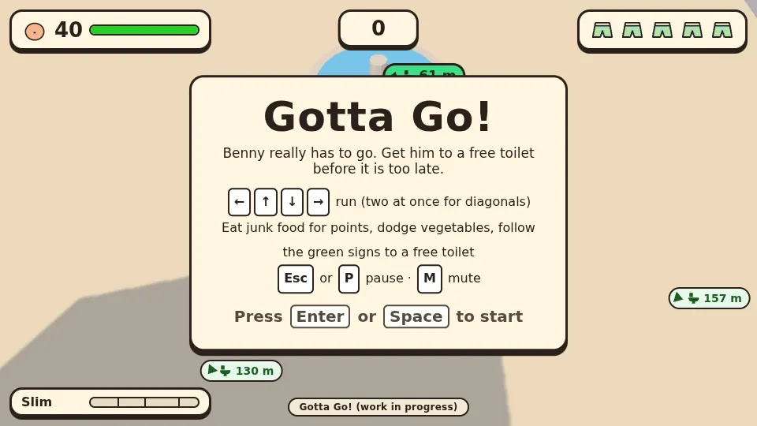
HumanMessage 8 · 21:13
“Carry on with what you were doing. Go as far as you can, on your own!”
AgentThe session had paused for two and a half hours. Same words, same plan.
Agent21:30 #22
M7Juice
- Benny hops, waddles, breathes, and jiggles when time is short.
- Squash and stretch that keeps his volume: width = 1/√height.
- Camera shake on hits, never with reduced motion.
- Crumbs, leaves, crumple smoke, a stink cloud.
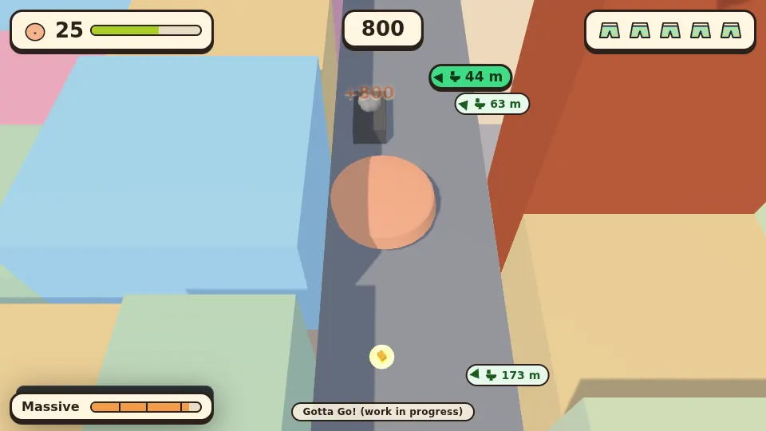
Agent22:15 #23
M7A bar that explains itself
- It marks where alleys (w ≈ 0.25) and streets (≈ 0.82) stop fitting.
- And where cars (0.5) and buses (0.85) start to crumple.
- Computed from the formulas, not hard-coded.
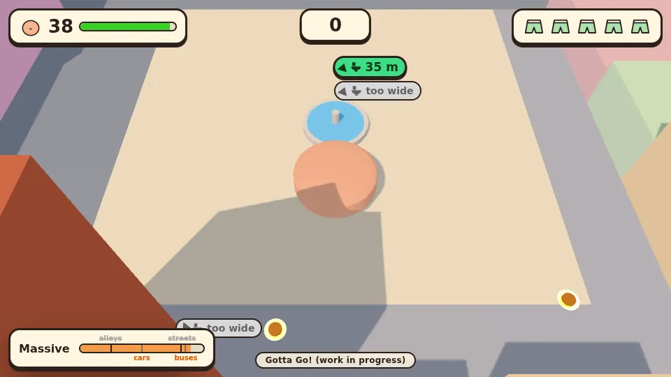
HumanMessages 9–11 · 22:26 → 22:42
The human checks in
- “Meanwhile… where are you at??”
- “Very briefly: where are we?”
- “Carry on… or: what should I do?”
AgentThree status checks in 16 minutes. It answers each, and keeps merging.
M8Hardening
- Path search 40% faster, with no allocations per call.
- 10–16 draw calls of the 300 allowed; 1.2 MB of the 15 MB.
- An end-to-end test plays a seeded run to a toilet, with the arrow keys.
- Docs brought up to date. Every check green.
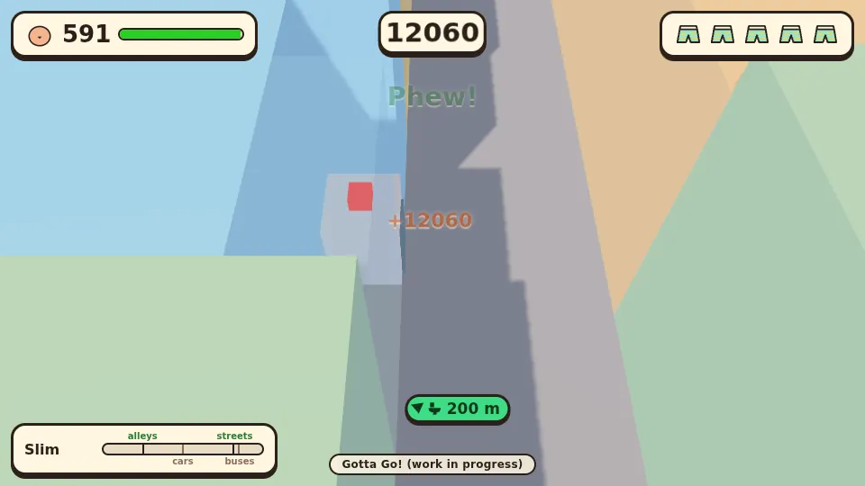
HumanMessage 12 · 23:05
“Put the game on /gottago and its story on /story. Build the story on your own, and keep it updated.”
AgentSo it wrote this page too, and adds a stage whenever the game moves on.
HumanMessage 16 · 20:06
“Show me the sketches before you build the assets, so we choose the style together. And put the rejected and the accepted ones in the story.”
AgentSo every look starts as a round of sketches, and each topic gets a side story of its own, one click away from here.
v0.1.0The greybox game loop ships
- The human merges release PR #2 into
master: 28 pull requests at once. - Eight milestones in it: M0 to M5, M7 and M8. M6 has its asset pipeline only.
- No release followed the merge. The human asked why, and opened the guard (#38).
- Since then every merge into
masteris a version, a tag and a release.
HumanMessages 13 and 25 · 23:23
“Is the game playable on a phone too? Yes or no?”
AgentNo: arrow keys only, and a HUD made for 960 px. Of three options the human picked C: say so on phones now, touch controls later.
Agent23:24
M6Benny, round 1
- The first paid image: four sketches from the character sheet in the design.
- Same prompt, four takes: rounder, softer, chunkier, taller.
- The human picks one; side and back views follow from it, then the 3D model.
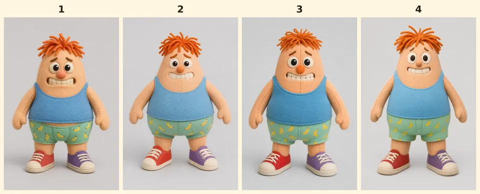
Agent23:33
A note for phones
- Only coarse pointers, no fine one: a phone. The title screen says “needs a keyboard”.
- A touchscreen laptop still counts as a computer; a plugged-in keyboard still works.
- Touch controls become milestone M9: a finger to steer, a compact HUD.
- Three sessions ran in parallel tonight, and agreed by message who did what.
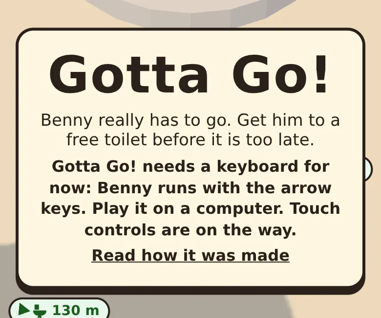
Agent22:11
M6The food, round 1
- All thirteen items on one sheet: seven junk foods, six vegetables.
- Two materials, two sheets each: stitched felt like Benny, or glossy vinyl.
- The pick sets the material of the whole town: vehicles, toilets, props.
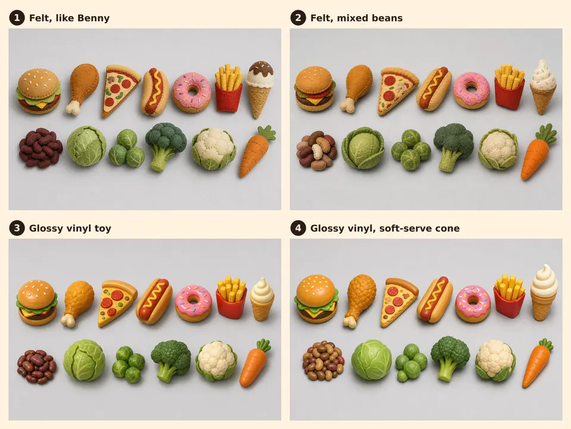
v0.2.0The first release by the new rule
-
Versioned before the merge, unasked:
package.json, the changelog, the title. - In it: Benny's first sketches, the phone note, image references, the release guard.
- Four sessions built it in parallel, and settled by message who cuts and who ships.
- The human merges it; the agent publishes the tag and the release right after.
M9Benny on a phone
- A finger anywhere is a stick: past a 14 px dead zone, the nearest of the eight arrow-key directions.
- A tap starts, goes on and plays again; two round buttons pause and mute.
- Upright, the HUD shrinks to fit 390 px, and the title asks to turn the phone.
- The path search now runs 4,000 cells a step: the slowest step fell from 5.5 to 2 ms.
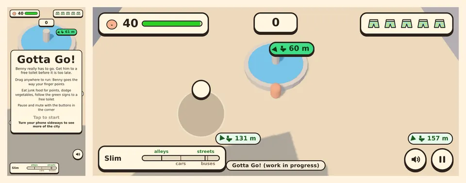
Agent18:12 v0.2.0
v0.3.0Playable on a phone
- The human merged v0.2.0; one minute later its tag and release were out.
- Three pull requests had waited for it, ready: touch, smoother frames, the food sketches.
- They went in one by one, each brought up to date with the last, then cut as v0.3.0.
HumanMessage 37 · 19:00
“Benny 1 and food 2. Merged with squash: write it down as a rule that I prefer it on master, so after these merges you always realign the history with dev.”
AgentSo the town is felt: the roundest Benny and the felt food go on to the next round. And every release now ends with one more step, done by the agent.
Agent23:57
M6First felt in town
- Two more rounds of Benny: all the way round, then arms out at 40°, for the rig.
- Thirteen felt foods, one image each, drawn from the kept sheet.
- The burger is the first model in the game: 1,499 triangles, 94 kB.
- Benny is in 3D with a skeleton, a walk and a run: he steps in next.
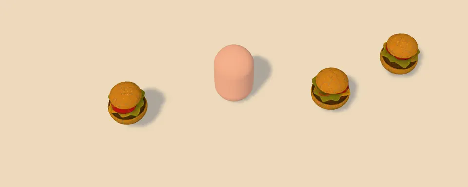
HumanMessage 41 · 00:27
“OK for the burger, go on with the others! But take away that yellow circle around the food: it looks like a halo, it makes no sense.”
AgentSo all thirteen foods are felt now, the ones that stood up are laid down, and the rings are gone: each hovers over its own shadow.
Agent01:16
M6Benny steps in
- From the sketch the human kept: 18,708 triangles, a skeleton of 24 joints, 1.3 MB.
- Five clips: idle, walk, run, a clenched waddle when time is short, a fall.
- One thing the agent may not do is download with curl: the human ran a script, once.
- The capsule that stood in for him since the first night is the fallback now.
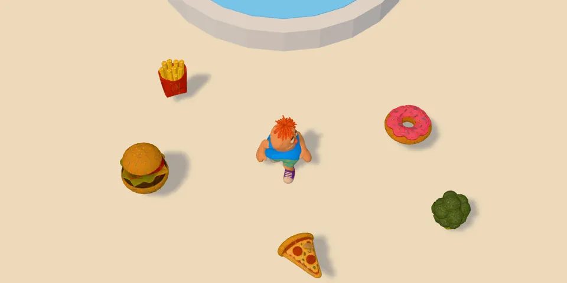
Agent09:08
v0.4.0A felt town
- In it: Benny in felt with five clips, the thirteen felt foods, no more halos.
- The first release that publishes itself: a workflow tags it and realigns the branches.
- The whole site weighs 4.6 MB, under the 15 MB budget.
Who did what
Human
- {{humanMessages}} messages
- 1 push of 8 guardrail files
- 2 API keys set
- 0 lines of game code
Agent
- {{agentActions}} actions (tool calls)
- {{pullRequests}} pull requests, merged on green CI
- {{gameLines}} lines of game code
- {{unitTests}} unit tests, {{e2eTests}} end-to-end
About {{workHours}} hours of agent work in {{clockHours}} on the clock. The rest was waiting: for a push, a go, the morning, new credits.
What's next
- M6, the art: the vehicles, the toilets and the street props, in felt, each starting as a round of sketches.
- A GitHub Release for every merge into
master, published by a workflow. - M9's last check: the frame time on a real phone, in the human's hand.
- And a new stage here for each of them.
Updated {{updated}}.